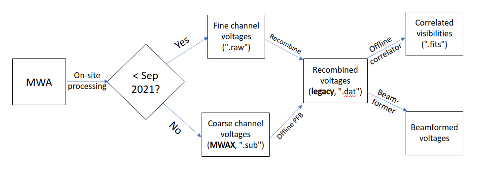

(This page is copied from [](https://wiki.mwatelescope.org/display/MP/Processing+high+time+resolution+data+with+VCSBeam).)
- Todo:
- Update the beamforming pipeline overview with updated information
The beamforming pipeline described here is applicable to fine-channelised (10 kHz) MWA data that was produced up to September 2021 (hereafter called legacy data), when the legacy Voltage Capture System was decommissioned. The upgraded system, MWAX (documented elsewhere on this wiki), produces coarse-channelised (1.28 MHz) high-time resolution (HTR) data (hereafter called MWAX data; see the format description here). Apart from the obvious requirement to be able to process the new data format, a number of other factors have motivated the development of VCSBeam, which operates sufficiently differently from the legacy beamformer that it has now branched off into its own repository, housed at this GitHub page.
Processing Pipeline Overview

Individual processing steps
- Download (not part of VCSBeam): This step is currently identical to the downloading step described on the legacy page. For legacy data, the existing pipeline performs the "recombine step" automatically, so that the data which are made available to the user are the "Recombined voltages", or ".dat" files. As of this writing (25 Sep 2021), it is not yet clear whether the current downloading instructions will correctly download MWAX data (i.e. after September 2021), or whether that functionality still needs to be implemented. However, it is intended that the data that will be downloaded are the "Coarse channel voltages", or ".sub" files.
- Offline PFB: This step mimics the FPGA-based polyphase filter bank that was implemented in the legacy system, but which is not supplied by the MWAX system. It is currently (as of September 2021), the only way to process MWAX data, although there are many outstanding issues with this that are described below.
- Offline correlator: Used for producing correlated visibilities in the form of GPUBox files, e.g., for in-beam calibration, or making fast images.
- Beamformer: This produces the maximum sensitivity towards a desired look-direction. It incorporates the multi-pixel functionality described in Swainston et al. (in prep). The outputs of the beamformer are either full Stokes PSRFITS files at 100 us resolution, or dual polarisation (XY) VDIF files at 0.78 us resolution.
Download
Refer to the legacy page for instructions.
Offline PFB
Documentation for the Offline PFB is found here.
Offline Correlator
Documentation for the Offline Correlator is found here.
Beamformer
VCSBeam provides two binaries for beamforming:
make_mwa_incoh_beammake_mwa_tied_array_beam
Incoherent beam
Example of use on Garrawarla
Tied-array beam
Example of use on Garrawarla
#!/bin/bash -l
#SBATCH --nodes=1
#SBATCH --mem=370gb
#SBATCH --partition=gpuq
#SBATCH --gres=gpu:1
#SBATCH --time=01:00:00
#SBATCH --account=mwavcs
#SBATCH --export=NONE
module use /pawsey/mwa/software/python3/modulefiles
module load vcsbeam
srun -N 24 -n 24 make_mwa_tied_array_beam \
-m PATH/TO/1240826896_metafits_ppds.fits \
-b 1240826897 \
-T 295 \
-f 133 \
-d PATH/TO/VCS/DATA \
-P pointings.txt \
-c PATH/TO/CAL/1240827912.metafits \
-C PATH/TO/RTS/SOLUTION \
-p